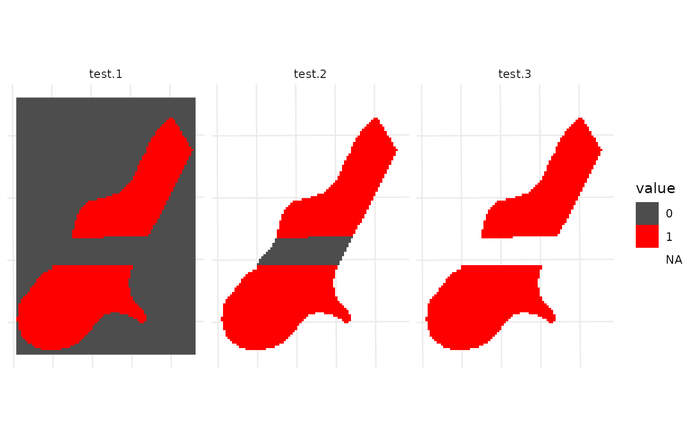

This function converts raster values into a binary format where positive values are set to 1 (presence) and zeros remain 0 (absence). Additionally, it allows for the conversion of NA values to 0, and/or 0 values to NA, based on the user's choice.
Arguments
- raster
The input raster map. It must be of class
PackedSpatRaster,RasterLayer, orSpatRaster. This parameter cannot be NULL.- na_to_0
A logical value indicating whether NA values should be converted to 0. Defaults to
TRUE.- zero_to_na
A logical value indicating whether 0 values should be converted to NA. Defaults to
FALSE.
Value
A raster map where values have been converted according to the specified parameters. This object is of the same class as the input object.
Examples
ecokit::load_packages(dplyr, raster, ggplot2, tidyterra)
# example data
r <- r2 <- raster::raster(
system.file("external/test.grd", package = "raster"))
# change some values to 0
r[5000:6000] <- 0
r <- raster::mask(r, r2)
ggplot2::ggplot() +
tidyterra::geom_spatraster(data = terra::rast(r), maxcell = Inf) +
ggplot2::theme_minimal() +
ggplot2::theme(axis.text = ggplot2::element_blank())
# ------------------------------------------------------
r_2 <- raster::stack(
# 1) zero remains zero; NA becomes zero
raster_to_pres_abs(raster = r),
# 2) NA is kept as NA
raster_to_pres_abs(raster = r, na_to_0 = FALSE),
# 3) 0 replaced with NA
raster_to_pres_abs(raster = raster_to_pres_abs(r), zero_to_na = TRUE))
ggplot2::ggplot() +
tidyterra::geom_spatraster(
data = terra::as.factor(terra::rast(r_2)), maxcell = Inf) +
ggplot2::facet_wrap(~lyr) +
ggplot2::scale_fill_manual(values = c("grey30", "red", "blue"),
na.value = "transparent") +
ggplot2::theme_minimal() +
ggplot2::theme(axis.text = ggplot2::element_blank())
